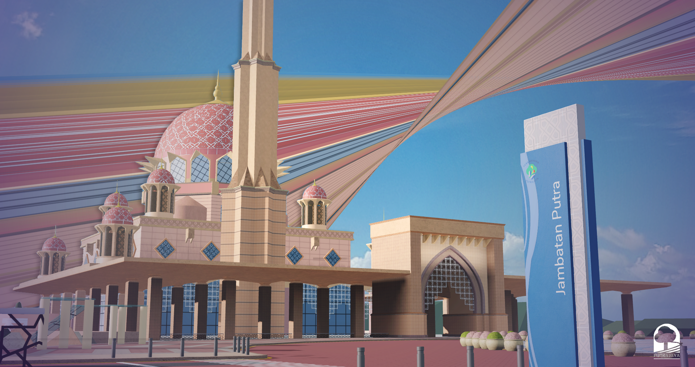

Roleplay
with purpose
Build believable characters and take part in meaningful stories across the city.
More than a roleplay game
Putrajaya of Roblox is a welcoming Ro-State community inspired by Malaysia’s administrative capital. Serve the public, build a business, attend events, or discover the city with friends.
Find your place ↗
A city built for stories
Explore civic spaces, landmarks, public services, and community life in a Roblox interpretation of Malaysia’s federal territory.
See the city in motion
Watch a short captured moment from the world we are building.
Build believable characters and take part in meaningful stories across the city.
Find your people, learn new skills, and help shape our shared future.
From public service to entrepreneurship, your choices create Putrajaya.
Play the projects
Visit our Roblox projects and discover different parts of the city.
Managed content
Career roles
From the community
Official announcements and community stories.
Read the story ↗Learn the basics before you begin.
Read the guide ↗News and event announcements.
Stay updated ↗The community handbook
Learn about departments, rules, ranks, and how to get the most from your roleplay experience.
Browse the Wiki ↗Your next chapter awaits

Join our community, follow the latest news, and meet the people who make Putrajaya of Roblox special.